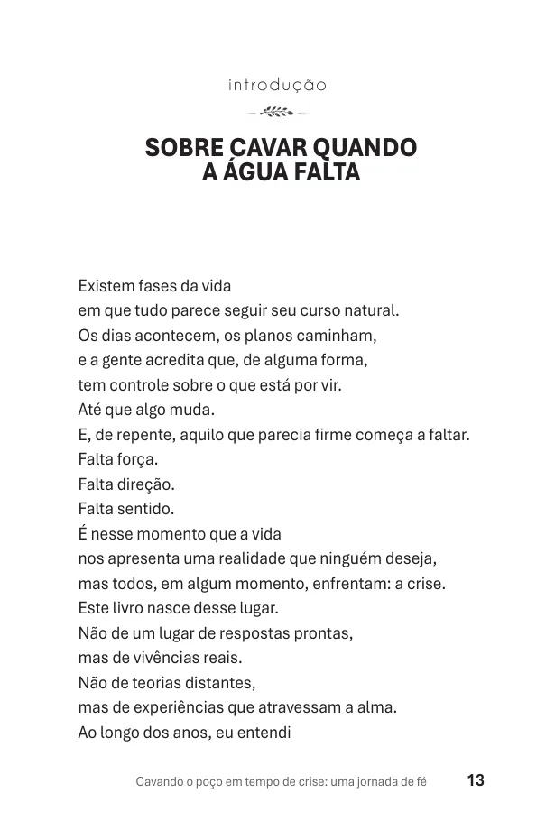
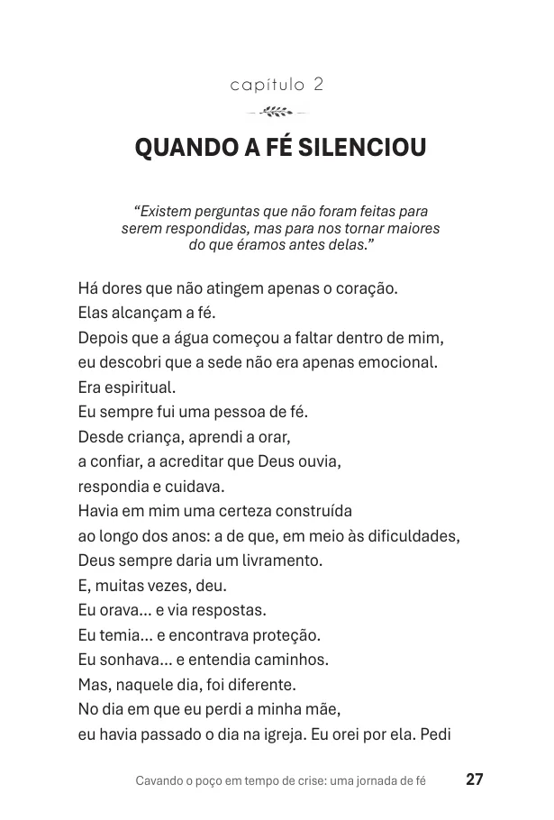
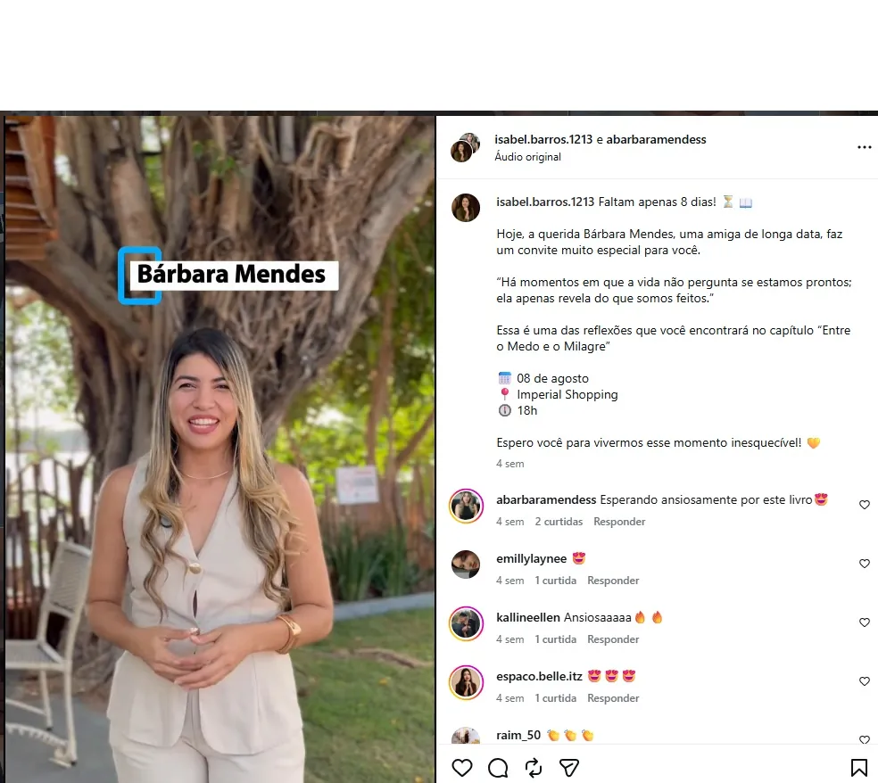

Há dores que continuam acontecendo enquanto o mundo segue normalmente.
Você continua cuidando, trabalhando e respondendo. Mas por dentro existe um lugar que secou — e nem sempre é fácil explicar isso para alguém.
Quando faltam palavras
Quando o luto muda a rotina
Quando recomeçar pesa
Antes de chegar à tela, esta obra já esteve no palco, nos autógrafos e nas mãos de leitores.
“Cavando o Poço em Tempo de Crise” foi publicado e lançado como obra real. Esta página oferece a versão digital em PDF da mesma história — mais simples de comprar e ler pelo celular.
Não compre no escuro: estas são páginas reais do e-book.
Amostras do próprio PDF entregue após a compra.


Quem viu, leu ou acompanhou a obra deixou registros públicos.
“Envolvente, impactante e reflexivo... amei os 13 capítulos.”
Comentário público de leitora no Instagram. Os prints abaixo são exibidos como registros reais; curtidas e comentários não são apresentados como número de compradores.
Comentário de leitura sobre os 13 capítulos.
Registro público da obra e das reações ao lançamento.

Outro registro público relacionado à obra.
Reconhecer. Cavar. Perceber o que ainda sustenta.
Reconhecer
Dar nome ao que secou: luto, medo, silêncio, exaustão e mudanças.
Cavar
Continuar a travessia sem transformar fé em resposta pronta ou dor em espetáculo.
Perceber
Encontrar aquilo que ainda sustenta a vida, mesmo quando a crise deixou marcas.
Ouça a voz por trás da história antes de comprar.
Os vídeos só carregam quando você toca para assistir — melhor para quem está no 4G.
A obra fora da tela.
Fotos reais da apresentação, sessão de autógrafos e público presente.
13 capítulos para diferentes lugares da crise.
Fé e luto
Quando a água começou a faltar • Quando a fé silenciou • Entre o medo e o milagre
Vida e relações
Quando o amor é atravessado pela dor • Quando trabalhar virou uma batalha • Quando a doença tenta nos desestabilizar
Profundidade e recomeço
As cicatrizes que ficam • Quando a pá precisa ser refeita • O Poço • A Água • Quando for sua vez de cavar
Cavando o Poço em Tempo de Crise
A versão em PDF da obra de Isabel Araújo Barros para ler no seu ritmo.
Pix: assim que o pagamento é confirmado pela Hotmart, o acesso ao e-book é liberado. O reconhecimento do Pix costuma ser mais rápido que boleto.
O que realmente importa saber.
Quando a oração parece seca, ainda existe um poço para cavar.
Não é um manual de cura. É uma companhia para dias em que as palavras não vêm.
Quero ler o e-book agora por R$ 27,90E-book em PDF • checkout e entrega pela Hotmart